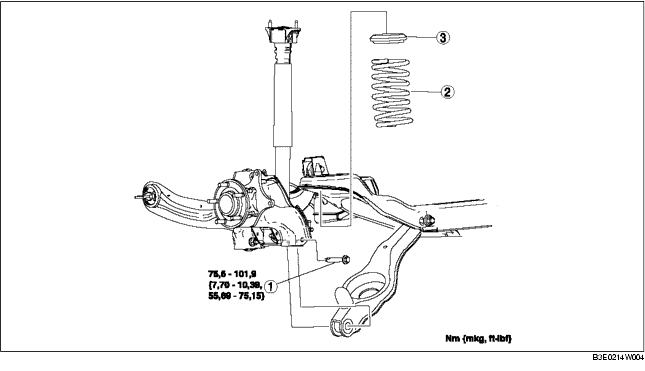

1. Den hinteren Sensor des automatischen Leuchtweitenreglers ausbauen. (Siehe SENSOR FÜR AUTOMATISCHE LEUCHTWEITENREGELUNG AUSBAUEN/EINBAUEN.)
2. Den Hinterachsstabilisator abmontieren. (Siehe HINTEREN STABILISATOR AUSBAUEN/EINBAUEN.)
3. Gemäß der Reihenfolge in der Tabelle ausbauen.
4. Der Einbau erfolgt in umgekehrter Reihenfolge.
5. Die Achsgeometrie prüfen und ggf. einstellen.
(Siehe HINTERACHSGEOMETRIE.)

.
1. Den unteren Hinterrad-Querlenker mit einem Wagenheber unterstützen.
2. Innere Schraube des unteren Hinterrad-Querlenker lösen.
3. Die äußere Schraube des unteren Hinterrad-Querlenkers ausbauen.
1. Den Wagenheber am unteren Hinterrad-Querlenker positionieren und dann aufbocken.
2. Das obere Ende der hinteren Schraubenfeder mit dem Schritt des oberen Gummilagers ausrichten.
3. Das untere Ende der hinteren Schraubenfeder mit dem Schritt des unteren Gummilagers ausrichten.
4. Die äußere Schraube des unteren Querlenkers hineindrehen.